Sổ tay hướng dẫn học tập cùng cây tri thức cá nhân hóa
Chào mừng bạn đến với hệ sinh thái học tập tri thức. Tài liệu này sẽ đồng hành cùng bạn khám phá cách học tập thông minh, cá nhân hóa bằng sơ đồ cây và sự hỗ trợ đắc lực từ Trợ lý AI.
PHẦN 1: BƯỚC ĐẦU LÀM QUEN
1.1. Tạo tài khoản & Đăng nhập
Đầu tiên, hãy mở trình duyệt web của bạn và truy cập vào địa chỉ: https://treeknowledge.online
Tại đây, để bắt đầu hành trình xây dựng Cây tri thức của riêng mình, bước tiếp theo bạn cần làm là tạo một tài khoản. Đừng lo, việc này chỉ mất của bạn chưa tới 1 phút và hoàn toàn miễn phí!
Bạn có thể chọn 1 trong 2 cách sau để tham gia:
Cách 1: Đăng nhập cực nhanh qua Google (Khuyên dùng) Nếu bạn không muốn phải nhớ thêm mật khẩu mới, hãy sử dụng tính năng này:
1. Tại màn hình chính, bạn nhấn vào nút "Đăng nhập với Google".
2. Một cửa sổ nhỏ hiện ra, bạn chỉ cần chọn tài khoản Gmail mình đang dùng.
3. Vậy là xong! Bạn đã đăng nhập thành công.
Cách 2: Đăng ký bằng Email cá nhân
1. Tại màn hình chính, nhấn vào dòng chữ "Đăng ký tài khoản mới".
2. Điền địa chỉ Email của bạn và tự tạo một Mật khẩu an toàn.
3. Nhấn nút "Đăng ký" để hoàn tất.
Thiết lập hồ sơ học tập (Chỉ dành cho lần đăng nhập đầu tiên)
Ngay sau khi bạn tạo tài khoản và bước vào ứng dụng lần đầu, hệ thống sẽ muốn "làm quen" với bạn một chút để phục vụ bạn tốt hơn.
Một bảng thông tin nhỏ sẽ hiện ra, bạn chỉ cần hoàn thành 2 thông tin cơ bản:
● Tên hiển thị: Tên mà bạn muốn hiển thị trên hệ thống và trong cộng đồng học tập.
● Mục tiêu học tập chính: Hãy chọn mục tiêu bạn mong muốn (Ví dụ: Ôn thi đại học, Tự học kỹ năng mới, Nâng cao chuyên môn công việc...). Thông tin này giúp AI Tutor gợi ý các Cây tri thức phù hợp nhất dành riêng cho bạn!
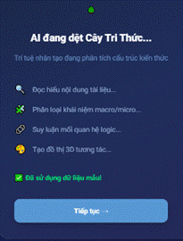
1.2. Khám phá Bảng điều khiển (Dashboard)
Ngay sau khi đăng nhập thành công, bạn sẽ được đưa đến Bảng điều khiển (Dashboard). Hãy coi đây là "bàn làm việc ảo" của bạn, nơi tổng hợp mọi thông tin quan trọng nhất để bạn dễ dàng quản lý việc học của mình mà không sợ bị lạc hướng.
Dưới đây là 3 khu vực chính trên Bảng điều khiển mà bạn cần chú ý:
[1] Tổng quan tiến độ (Khu vực tạo động lực) Góc này giống như một bảng thành tích thu nhỏ của riêng bạn. Tại đây, bạn sẽ thấy:
● Biểu đồ học tập: Thể hiện trực quan sự chăm chỉ của bạn trong tuần/tháng qua.
● Số giờ đã học: Giúp bạn biết mình đã dành bao nhiêu thời gian cho việc trau dồi bản thân.
● Điểm/Kinh nghiệm (XP): Mỗi khi bạn hoàn thành một bài học hay vượt qua phần đánh giá, điểm số này sẽ tăng lên. Đây là minh chứng rõ ràng nhất cho sự tiến bộ của bạn mỗi ngày!
[2] Cây đang học dở (Khu vực Tiếp tục nhanh) Bạn đang học dở bài hôm qua và phải đi ngủ? Đừng lo! Tại khu vực này, hệ thống sẽ ghim lại những Cây tri thức bạn đang học dang dở. Bạn chỉ cần nhấn nút "Học tiếp" là sẽ được đưa trở lại chính xác Node (nhánh kiến thức) mà bạn đã dừng lại ở lần đăng nhập trước. Vô cùng tiện lợi và tiết kiệm thời gian tìm kiếm.
[3] Gợi ý học tập (Khu vực Khám phá) Dựa vào "Mục tiêu học tập" mà bạn đã thiết lập ở bước tạo tài khoản, AI của hệ thống sẽ tuyển chọn và giới thiệu cho bạn những Cây tri thức phù hợp nhất tại đây. Đó có thể là những Cây đang được nhiều người học nhất, hoặc những chủ đề bổ trợ trực tiếp cho mục tiêu của bạn. Nếu thấy hứng thú, chỉ cần click vào để khám phá ngay!
PHẦN 2: XÂY DỰNG & TÌM KIẾM CÂY TRI THỨC
Bạn có thể tự tay xây dựng một Cây tri thức cho riêng mình, nhưng nếu bạn muốn bắt đầu học ngay lập tức, sử dụng các "Cây có sẵn" trong hệ thống là một lựa chọn tuyệt vời!
2.1. Sử dụng Cây tri thức có sẵn để học ngay
Hệ thống cung cấp một Thư viện chung, nơi chứa hàng ngàn Cây tri thức chất lượng đã được xây dựng sẵn bởi các chuyên gia và cộng đồng. Để tìm và học, bạn chỉ cần thực hiện theo 3 bước đơn giản sau:
Bước 1: Tìm kiếm chủ đề bạn quan tâm Tại cột menu (hoặc ngay trên màn hình chính), hãy chọn mục "Thư viện" (hoặc Khám phá). Tại đây, bạn có 2 cách để tìm:
● Sử dụng Thanh tìm kiếm: Nhập từ khóa bạn muốn học (Ví dụ: "Lập trình Python", "Lịch sử Việt Nam", "Kỹ năng giao tiếp").
● Lọc theo Danh mục: Bấm vào các thẻ chủ đề có sẵn (Khoa học, Ngôn ngữ, Nghệ thuật...) để duyệt qua các Cây đang nổi bật trong nhóm đó.
Bước 2: Xem trước (Preview) cấu trúc Cây Khi tìm thấy một Cây tri thức có vẻ thú vị, đừng vội bấm học ngay. Hãy click chuột vào tên của Cây đó để xem trang Chi tiết. Tại đây, bạn có thể nhìn thấy toàn bộ "bộ khung" của Cây:
● Cây này được chia làm bao nhiêu Chương lớn?
● Trong mỗi Chương có bao nhiêu Node (Nhánh/Bài học nhỏ)?
● Việc xem trước này giúp bạn đánh giá được lượng kiến thức có phù hợp với thời gian và trình độ của mình hay không.
Bước 3: Sao chép về và Bắt đầu học Nếu bạn quyết định chọn Cây này, hãy nhấn vào nút "Bắt đầu học" (thường có màu nổi bật nhất trên màn hình).
● Lưu ý nhỏ: Khi bạn nhấn nút này, hệ thống thực chất sẽ tạo ra một bản sao (copy) của Cây tri thức đó và mang về đặt trong không gian học tập cá nhân của bạn. Điều này đảm bảo rằng trong quá trình bạn học, mọi tiến độ (số điểm, bài tập đã làm, các node đã hoàn thành) sẽ được lưu lại riêng biệt chỉ cho một mình bạn thấy!
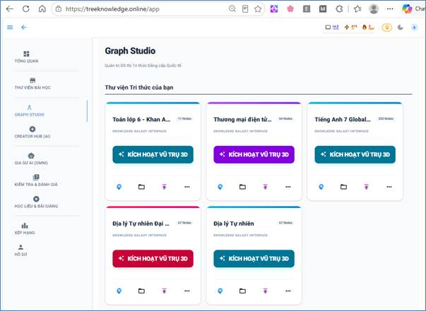
2.2. Tự tạo Cây tri thức mang dấu ấn cá nhân
Bên cạnh việc dùng đồ có sẵn, hệ thống cũng cung cấp cho bạn một công cụ vô cùng mạnh mẽ để tự vẽ nên lộ trình kiến thức của riêng mình. Tính năng này rất tuyệt vời khi bạn muốn tổng hợp lại những gì đã học, hoặc thiết kế một bài giảng chia sẻ cho người khác.
Hãy tưởng tượng bạn đang vẽ một sơ đồ tư duy (Mindmap), các bước thực hiện như sau:
Bước 1: Khởi tạo "móng" cho Cây
1. Tại màn hình Bảng điều khiển, hãy tìm và nhấn nút "+ Tạo Cây mới" (Create New Tree).
2. Một bảng điền thông tin hiện ra. Bạn cần đặt Tên Cây (VD: Nhập môn Marketing) và chọn Chủ đề tương ứng từ danh sách thả xuống.
3. Nhấn Xác nhận. Hệ thống sẽ đưa bạn vào một không gian làm việc rộng rãi được gọi là Bản vẽ (Edit Canvas).
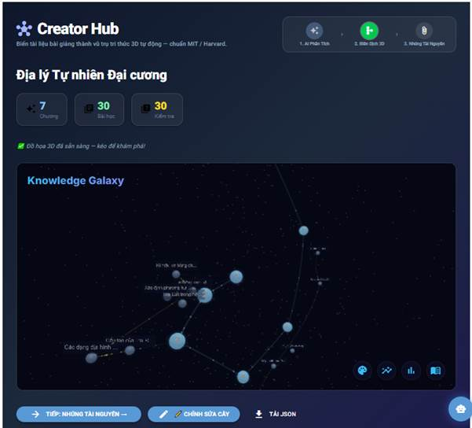
Bước 2: Vẽ các nhánh (Node) và nhóm thành Chương Tại Bản vẽ, bạn sẽ thấy một điểm khởi đầu (Node gốc) mang tên Cây của bạn.
● Tạo thêm Bài học (Node): Để mở rộng kiến thức, bạn chỉ cần chọn một công cụ "Thêm Nhánh" trên thanh menu, hoặc nhấn vào dấu [+] xuất hiện cạnh Node gốc. Một Node mới (bài học mới) sẽ mọc ra và nối liền với Node cũ.
● Nhóm thành Chương (Chapter): Để Cây không bị rối mắt khi có quá nhiều bài học, bạn có thể tạo các Chương (như các thư mục lớn). Sau đó, hãy kéo các Node bài học thả vào trong Chương đó. Ví dụ: Chương 1 sẽ chứa 3 Node bài học cơ bản.
Nhúng tài nguyên học tập
Bước 3: Làm chủ các thao tác cơ bản Không gian Bản vẽ (Canvas) cho phép bạn tương tác cực kỳ tự do giống như đang sắp xếp các tờ giấy ghi chú trên mặt bàn:
● Di chuyển (Kéo thả): Bấm giữ chuột trái vào một Node hoặc Chương bất kỳ và kéo nó đi nơi khác để sắp xếp lại đội hình cho đẹp mắt.
● Đổi tên: Rất đơn giản, hãy nhấp đúp chuột (Double-click) vào tên hiện tại của Node để gõ tên mới, sau đó nhấn Enter.
● Xóa bỏ: Nếu lỡ tạo sai, hãy click chuột phải vào Node đó và chọn biểu tượng thùng rác (Xóa), hoặc nhấn phím Delete trên bàn phím. Đừng lo, hệ thống sẽ hỏi lại bạn một lần nữa để tránh xóa nhầm!
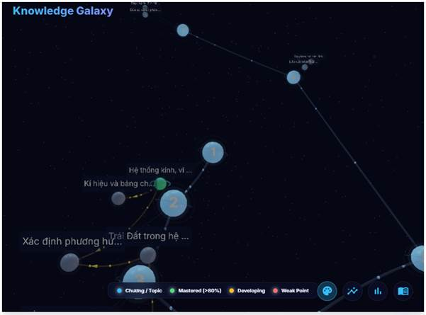
2.3. Bổ sung tài nguyên cho Cây (Node & Chương)
Sau khi đã phác thảo xong cấu trúc các nhánh, Cây tri thức của bạn hiện tại vẫn chỉ là một "bộ khung" trống. Để biến nó thành một khóa học thực thụ, bạn cần "bơm" kiến thức vào đó bằng cách đính kèm các tài liệu học tập vào từng Node cụ thể, hoặc đính kèm tài liệu tổng quan cho toàn bộ một Chương.
Cách thực hiện rất đơn giản:
Bước 1: Mở cửa sổ "Thêm tài liệu"
1. Trong không gian Bản vẽ (Edit Canvas), hãy di chuột đến Node hoặc Chương bạn muốn thêm nội dung.
2. Click chuột phải vào Node/Chương đó.
3. Một menu nhỏ sẽ xổ ra, hãy chọn dòng "Thêm tài nguyên" (hoặc Chỉnh sửa nội dung).
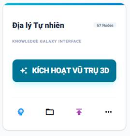
Bước 2: Tải lên hoặc liên kết học liệu Lúc này, một cửa sổ lớn (Popup) sẽ xuất hiện. Hệ thống của chúng tôi hỗ trợ đa dạng các định dạng học liệu để mang lại trải nghiệm học tập phong phú nhất. Bạn có thể chọn đính kèm một hoặc nhiều định dạng sau vào cùng một Bài học:
● 🌐 Link bài viết (URL): Dán đường dẫn của một bài báo, một trang blog hoặc nguồn tài liệu tham khảo bên ngoài internet vào đây.
● 🎥 Video YouTube: Chỉ cần dán link YouTube, hệ thống sẽ tự động nhúng (embed) video đó. Người học có thể xem video trực tiếp ngay trên nền tảng mà không bị chuyển hướng sang trang khác.
● 📕 Tệp PDF: Tải lên các file tài liệu giáo trình, slide bài giảng hoặc đề cương. Hệ thống tích hợp sẵn trình đọc PDF mượt mà.
● 📝 Ghi chú văn bản (Text): Trình soạn thảo văn bản có sẵn giúp bạn gõ trực tiếp các lời tựa, tóm tắt bài học, hoặc các điểm cần lưu ý (hỗ trợ in đậm, in nghiêng, chèn ảnh chèn bảng như Word).
Bước 3: Lưu lại Sau khi đã thêm đầy đủ tài liệu cho Bài học, đừng quên nhấn nút "Lưu thay đổi" ở góc dưới cửa sổ Popup nhé! Bạn có thể lặp lại thao tác này cho tất cả các Node trên Cây của mình.
PHẦN 3: TRẢI NGHIỆM HỌC TẬP TẠI MỘT NODE
Giải thích một chút: Khi bạn nhìn vào Cây tri thức, mỗi Node (nhánh) không chỉ là một cái tên hay một dòng tiêu đề. Khi click vào một Node, bạn thực sự đang bước vào một "Lớp học thu nhỏ".
Hành trình tại mỗi Lớp học này luôn được chia làm 2 phần rõ rệt: Học lý thuyết (Tiếp thu) và Đánh giá (Thực hành). Dưới đây là cách bạn sẽ trải qua phần đầu tiên.
3.1. Phần Học (Tiếp thu kiến thức)
Đây là nơi bạn tiêu thụ các tài liệu học tập đã được đính kèm vào Node. Tùy thuộc vào loại tài liệu, hệ thống sẽ mang đến cho bạn những trải nghiệm giao diện khác nhau nhưng đều hướng tới một mục tiêu: Giúp bạn tập trung tuyệt đối.
🎥 Trải nghiệm Học qua Video tương tác sâu: Nếu Bài học là một Video, bạn sẽ không chỉ "ngồi xem thụ động" như trên YouTube. Trình phát video (Player) của chúng tôi được thiết kế đặc biệt:
● Script chạy chữ (Phụ đề/Kịch bản): Hiển thị ngay bên cạnh hoặc bên dưới video. Chữ sẽ tự động chạy khớp với lời nói trong video, giúp bạn không bỏ sót bất kỳ thông tin nào, cực kỳ hữu ích khi học ngoại ngữ.
● Câu hỏi tương tác (Pop-up Quiz): Đừng lơ đãng! Sau mỗi đoạn quan trọng hoặc sau khi chuyển Slide, video có thể tự động tạm dừng và hiện ra một câu hỏi ngắn để kiểm tra xem bạn có nắm được ý vừa giảng không. Trả lời đúng, video mới tiếp tục chạy.
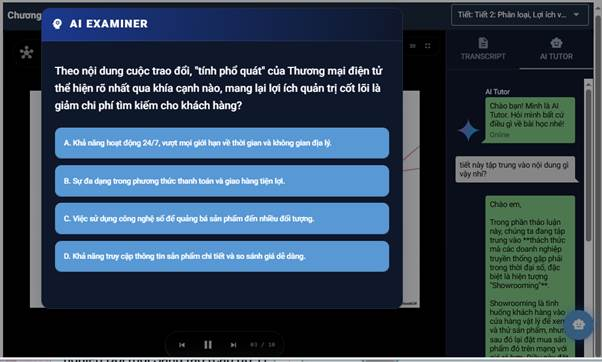
● Hỏi đáp trực tiếp với Gia sư AI (Tutor AI): Ngay bên phải màn hình Video là khung Chat của AI. Bạn không hiểu một khái niệm ở phút thứ 2:30? Hay slide trên màn hình có biểu đồ quá rắc rối? Hãy gõ câu hỏi vào khung Chat. AI Tutor đã "xem" và hiểu toàn bộ nội dung Video/Slide đó, nên nó sẽ giải thích cặn kẽ cho bạn ngay lập tức!
📕 Trải nghiệm Đọc Tài liệu (PDF, Web Link, Text):
● Trình đọc PDF tích hợp: Nếu Bài học là một file PDF, nó sẽ hiển thị thẳng trên màn hình của bạn. Bạn có thể phóng to, thu nhỏ, cuộn trang mượt mà mà không cần tải file về máy hay mở ứng dụng khác.
● Đọc Link/Ghi chú: Các đường dẫn bài báo ngoài web hoặc các đoạn ghi chú văn bản cũng được hiển thị trong một giao diện sạch, loại bỏ quảng cáo, giúp đôi mắt bạn chỉ tập trung vào tri thức.
Hoàn tất Phần Học: Sau khi đã xem hết video hoặc đọc xong tài liệu, và bạn cảm thấy mình đã nắm được kiến thức cốt lõi. Hãy di chuột xuống cuối trang và nhấn vào nút "Đã hiểu" (Mark as read).
Hành động này giống như một cái gật đầu tự tin, báo hiệu cho hệ thống biết: "Tôi đã sẵn sàng, hãy đưa ra thử thách!". Ngay lập tức, cánh cửa bước sang Phần Đánh giá sẽ được mở ra.
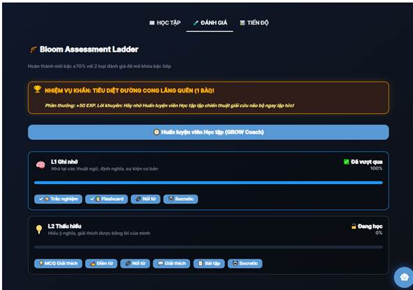
3.2. Phần Đánh giá (Khảo thí theo Thang đo Bloom)
Sau khi bạn đã tự tin nhấn nút "Đã hiểu" ở phần học lý thuyết, đã đến lúc kiểm tra xem kiến thức đó đã thực sự "thấm" vào bạn đến đâu.
Điểm khác biệt lớn nhất của nền tảng này là hệ thống bài tập không được giao một cách lộn xộn. Chúng tôi đánh giá năng lực của bạn dựa trên Thang đo nhận thức Bloom – một tiêu chuẩn giáo dục quốc tế uy tín.
Thang đo Bloom là gì? Hãy tưởng tượng sự hiểu biết của bạn về một vấn đề giống như việc leo lên một chiếc thang 6 bậc. Càng lên cao, đòi hỏi tư duy của bạn càng phải sâu sắc hơn:
1. Nhớ (Remember): Nhớ lại được thông tin, sự kiện cơ bản.
2. Hiểu (Understand): Nắm được ý nghĩa, diễn đạt lại được bằng lời của mình.
3. Vận dụng (Apply): Dùng kiến thức đã học để giải quyết một tình huống/bài toán cụ thể.
4. Phân tích (Analyze): Chia nhỏ vấn đề ra để tìm hiểu cấu trúc và mối liên hệ bên trong.
5. Đánh giá (Evaluate): Đưa ra phán xét, phản biện hoặc bảo vệ một quan điểm dựa trên tiêu chí rõ ràng.
6. Sáng tạo (Create): Lắp ghép các mảnh kiến thức để tạo ra một cái gì đó hoàn toàn mới.
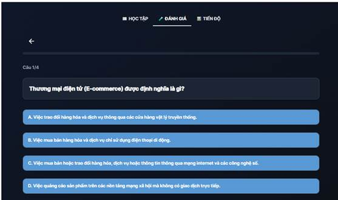
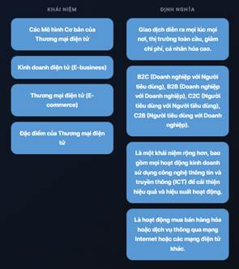 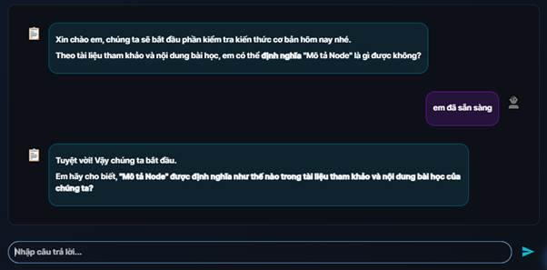
Hệ thống sẽ giao bài tập cho bạn như thế nào? Tùy vào mục tiêu của từng Cây tri thức, hệ thống sẽ đưa ra các dạng câu hỏi tương ứng để đo lường chính xác bạn đang ở bậc nào của chiếc thang trên:
● Để đo mức "Nhớ" & "Hiểu": Bạn thường sẽ gặp các câu hỏi trắc nghiệm (chọn A, B, C, D), điền từ vào chỗ trống, hoặc nối đáp án đúng. Mức này kiểm tra trí nhớ ngắn hạn của bạn.
● Để đo mức "Vận dụng" & "Phân tích": Hệ thống sẽ không hỏi lý thuyết suông nữa. Bạn có thể gặp các câu hỏi dạng tự luận ngắn, bài tập tính toán, hoặc một tình huống thực tế (case study) yêu cầu bạn dùng công thức vừa học để giải quyết.
● Để đo mức "Đánh giá" & "Sáng tạo": Đây là thử thách khó nhất. Bạn có thể được yêu cầu viết một bài luận nhỏ phản biện lại một ý kiến, hoặc đề xuất một giải pháp mới cho một vấn đề mở.
Nhận biết cấp độ khi làm bài: Khi mở bất kỳ câu hỏi nào lên, bạn hãy nhìn lên góc trên cùng của bài tập. Hệ thống luôn gắn một chiếc Nhãn (Badge) màu sắc ghi rõ cấp độ của câu hỏi đó (Ví dụ: 🏷️ Cấp độ: Vận dụng). Nhờ chiếc nhãn này, bạn sẽ chuẩn bị sẵn tâm lý và biết cách điều chỉnh phương pháp tư duy của mình trước khi bắt tay vào giải quyết bài toán!
3.3. Tương tác với Gia sư AI (Tutor AI) khi làm bài tập
Sẽ có những lúc bạn gặp phải một câu hỏi ở mức độ "Vận dụng cao" hoặc "Phân tích" khiến bạn bí ý tưởng, đọc mãi không hiểu đề, hoặc làm sai mà không biết mình sai ở bước nào.
Đừng vội nản chí hay mở tab mới để tìm kiếm đáp án trên mạng! Ngay lúc này, hãy nhờ đến sự trợ giúp của người bạn đồng hành luôn túc trực 24/7 bên cạnh bạn: Gia sư AI (Tutor AI).
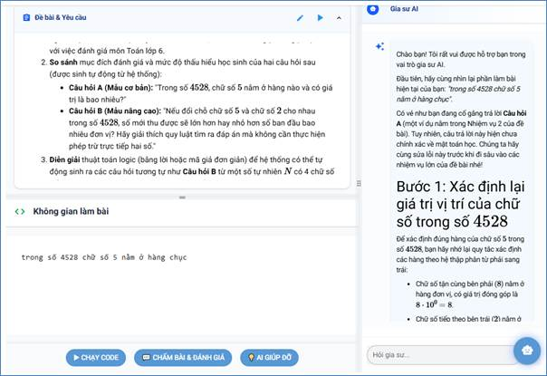
Khi nào và cách gọi AI như thế nào? Ở bất kỳ bài tập nào, bạn cũng sẽ thấy một nút "Gợi ý cho tôi" (hoặc biểu tượng bóng đèn / khung Chat) nằm ngay bên cạnh câu hỏi. Chỉ cần nhấn vào đó, khung Chat với Gia sư AI sẽ mở ra.
Cách AI hoạt động (Rất quan trọng bạn cần biết!) Không giống như các công cụ AI trò chuyện thông thường, Gia sư AI của chúng tôi được thiết kế theo chuẩn sư phạm. Điều đó có nghĩa là: AI SẼ KHÔNG BAO GIỜ CHO BẠN ĐÁP ÁN NGAY LẬP TỨC.
Thay vì đưa sẵn "con cá", AI sẽ hướng dẫn bạn cách "chế tạo cần câu":
● Chia nhỏ bài toán: Nếu câu hỏi quá phức tạp, AI sẽ gợi ý bạn đi giải quyết từng dữ kiện nhỏ một.
● Đặt câu hỏi gợi mở: AI có thể hỏi ngược lại bạn: "Theo bạn, trong công thức này, đại lượng X đại diện cho điều gì trước?" để kích thích bạn tự suy nghĩ.
● Hướng dẫn từng bước (Step-by-step): AI sẽ dắt tay bạn đi từng bước logic một. Khi bạn trả lời đúng bước 1, AI mới khen ngợi và gợi ý tiếp bước 2, cho đến khi bạn tự mình thốt lên: "À, ra là vậy!" và tự tìm ra đáp án cuối cùng.
Làm sao để nhận được sự trợ giúp sâu hơn? Học với AI là một cuộc hội thoại hai chiều. Nếu gợi ý đầu tiên của AI vẫn làm bạn bối rối, đừng ngại ngần gõ vào khung chat:
● "Tôi vẫn chưa hiểu chỗ này, bạn có thể giải thích lại đơn giản hơn không?"
● "Cho tôi một ví dụ thực tế tương tự để dễ hình dung được không?"
Gia sư AI không bao giờ biết cáu gắt, nó sẽ kiên nhẫn thay đổi cách tiếp cận, đưa ra các ví dụ sinh động hơn cho đến khi bạn thực sự hiểu bản chất của vấn đề mới thôi!
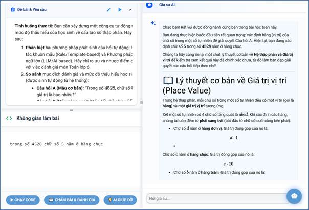
PHẦN 4: THEO DÕI & QUẢN LÝ BẢN THÂN
Học tập là một quá trình liên tục, và việc biết được mình đang đứng ở đâu là chìa khóa để tiến bộ nhanh nhất. Hệ thống không đánh giá bạn qua những con số khô khan, mà cung cấp một bảng Báo cáo năng lực vô cùng trực quan và sâu sắc.
4.1. Xem báo cáo năng lực chi tiết
Tại thanh menu chính, hãy nhấp vào mục "Báo cáo" (Analytics) hoặc nhấn vào biểu đồ thống kê ngay trên Bảng điều khiển để mở trang phân tích năng lực.
Tại đây, hệ thống sẽ chẩn đoán "sức khỏe" học tập của bạn qua 2 lăng kính:
Lăng kính 1: Mức độ thành thạo trên Bản đồ Cây (Biết được mình hổng kiến thức ở đâu) Bạn không cần phải làm lại tất cả các bài tập để biết mình đang quên bài nào. Hệ thống sẽ "tô màu" trực tiếp lên các Cây tri thức mà bạn đang học theo nguyên tắc:
● 🟢 Màu Xanh lá: Nhánh kiến thức (Node) này bạn đã nắm vô cùng nhuần nhuyễn. Trả lời đúng nhiều bài tập khó.
● 🟡 Màu Vàng: Bạn đã hiểu bài, nhưng thỉnh thoảng vẫn làm sai một số lỗi nhỏ. Cần cẩn thận hơn.
● 🔴 Màu Đỏ: Báo động! Đây là vùng "hổng kiến thức". Bạn thường xuyên trả lời sai hoặc cần quá nhiều sự trợ giúp từ AI ở nhánh này. Hệ thống khuyến nghị bạn nên click vào nhánh đỏ để ôn tập lại lý thuyết ngay!
Lăng kính 2: Đánh giá tư duy theo Thang đo Bloom (Biết được phương pháp học của mình đã chuẩn chưa) Đây là một phân tích chuyên sâu vô cùng thú vị. Hệ thống sẽ tổng hợp toàn bộ kết quả bài tập của bạn và vẽ ra một biểu đồ tư duy:
● Bạn có thể thấy biểu đồ của mình dâng lên rất cao ở cột "Nhớ" và "Hiểu" (Chứng tỏ bạn có trí nhớ rất tốt và chăm đọc tài liệu).
● Tuy nhiên, cột "Vận dụng" và "Phân tích" của bạn lại đang ở mức thấp. Điều này hệ thống đang muốn nhắn nhủ: "Bạn học thuộc lý thuyết rất giỏi, nhưng khi gặp bài toán thực tế thì lại loay hoay chưa biết cách áp dụng. Hãy làm nhiều bài tập thực hành hơn thay vì chỉ đọc sách nhé!".
Nhờ hai lăng kính báo cáo này, bạn sẽ luôn có một lộ trình tự ôn tập tối ưu, tiết kiệm thời gian nhất cho bản thân.
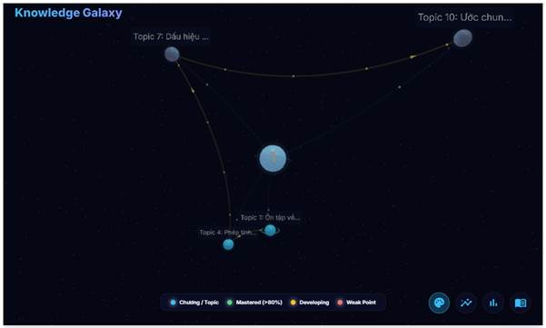
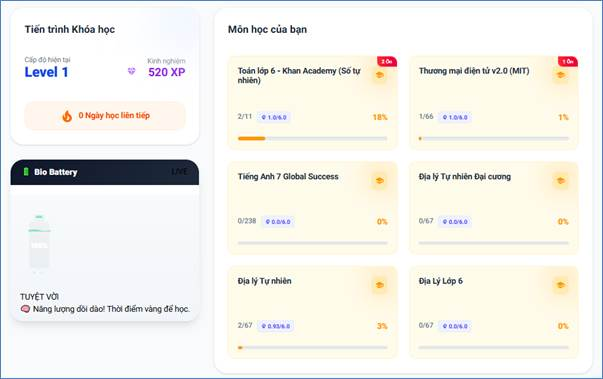
4.2. Quản lý tài khoản & Cài đặt khác
Để truy cập vào khu vực Cài đặt hệ thống, bạn hãy nhấp vào Biểu tượng ảnh đại diện (Avatar) của mình ở góc phải phía trên màn hình và chọn "Cài đặt" (Settings). Tại đây, bạn có toàn quyền tinh chỉnh không gian học tập cho phù hợp nhất với bản thân:
● 👤 Chỉnh sửa thông tin cá nhân: Bạn có thể thay đổi Tên hiển thị, đổi Ảnh đại diện hoặc cập nhật Mật khẩu. Đặc biệt, nếu định hướng của bạn thay đổi, bạn hoàn toàn có thể chọn lại "Mục tiêu học tập". Ngay lập tức, AI Tutor sẽ tính toán lại và đưa ra các Cây tri thức mới phù hợp với mục tiêu hiện tại của bạn.
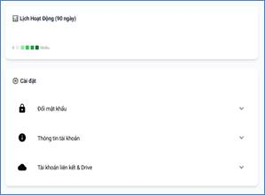
● 🔔 Cài đặt thông báo (Nhắc nhở học tập): Đôi khi công việc bận rộn khiến bạn lỡ quên mất lịch học? Hãy bật tính năng "Nhắc nhở học tập". Bạn có thể tùy chọn khung giờ hệ thống sẽ gửi thông báo (qua Ứng dụng hoặc qua Email) để giục bạn vào bàn học. Tất nhiên, nếu cảm thấy bị làm phiền trong những ngày nghỉ, bạn chỉ cần gạt nút công tắc để Tắt chúng đi.
● 🤝 Liên hệ Hỗ trợ & Tham gia Cộng đồng:
● Hỗ trợ kỹ thuật: Nếu gặp lỗi không xem được video, tài khoản bị sự cố, hoặc phát hiện lỗi của AI, hãy nhấn vào tab "Trợ giúp" để gửi yêu cầu hỗ trợ (Ticket). Đội ngũ kỹ thuật của chúng tôi sẽ phản hồi bạn trong thời gian sớm nhất.
● Cộng đồng: Đừng học một mình! Hãy nhấp vào biểu tượng liên kết để tham gia vào Group Facebook hoặc Discord của cộng đồng những người đang học trên nền tảng. Nơi đây bạn có thể khoe thành tích "Xanh lá" của mình, xin tài liệu, hoặc thảo luận về những bài tập hóc búa.
🎉 LỜI KẾT
Bạn đã đi đến phần cuối của cuốn Sổ tay hướng dẫn này rồi! Hệ thống Cây tri thức và Gia sư AI được sinh ra với một triết lý duy nhất: "Làm cho việc học trở nên thông minh, có cấu trúc và không bao giờ cô đơn".
Bây giờ, mọi công cụ đã nằm sẵn trong tay bạn. Hãy quay trở lại Bảng điều khiển, chọn một Cây tri thức bạn yêu thích và bắt đầu hành trình chinh phục những nấc thang Bloom của riêng mình nhé.
Chúc bạn có những giờ phút học tập thật hiệu quả và tràn đầy niềm vui!